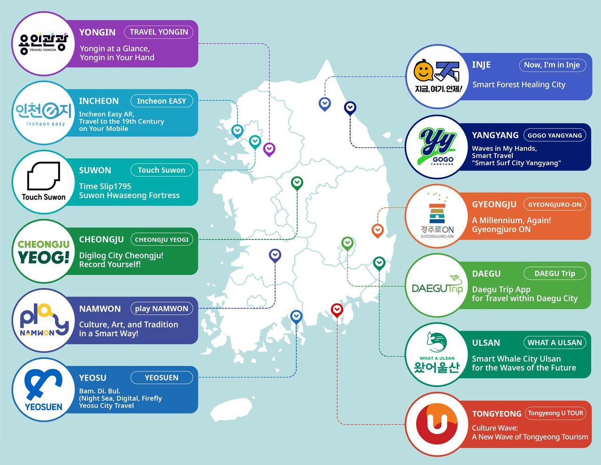
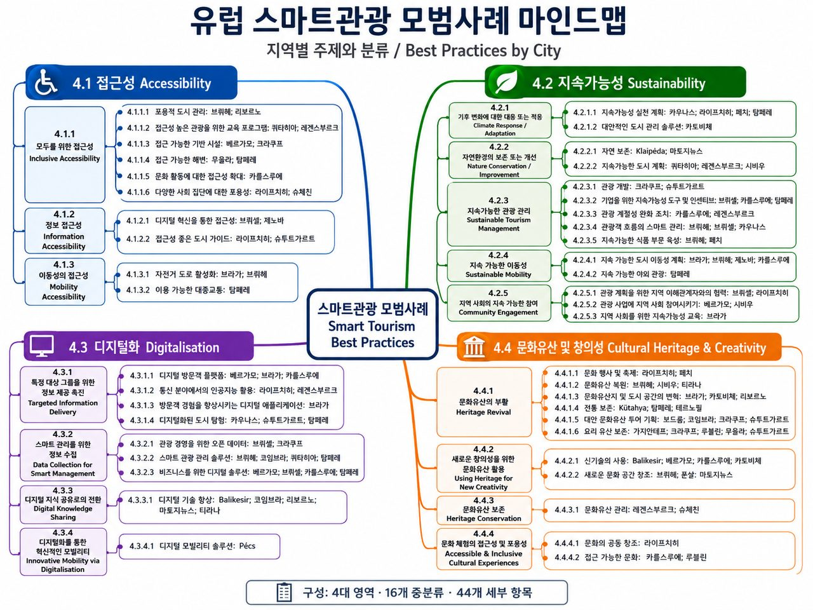
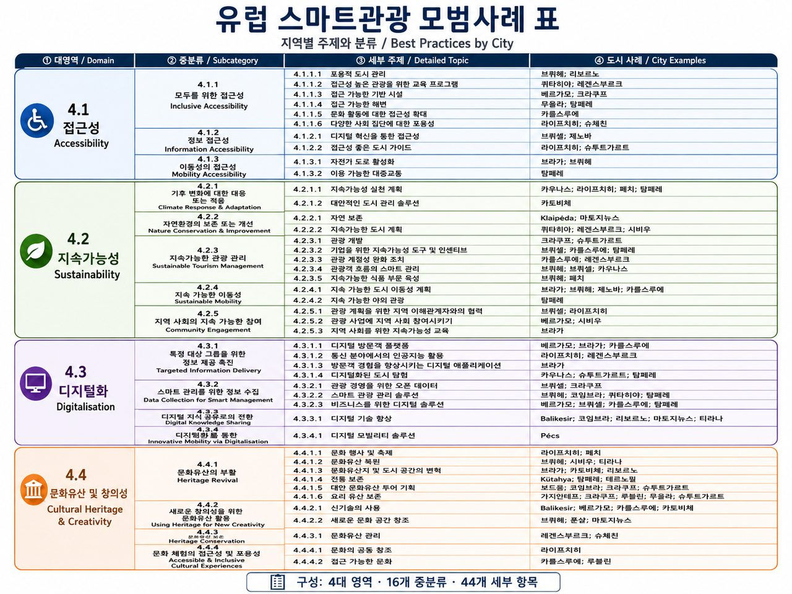
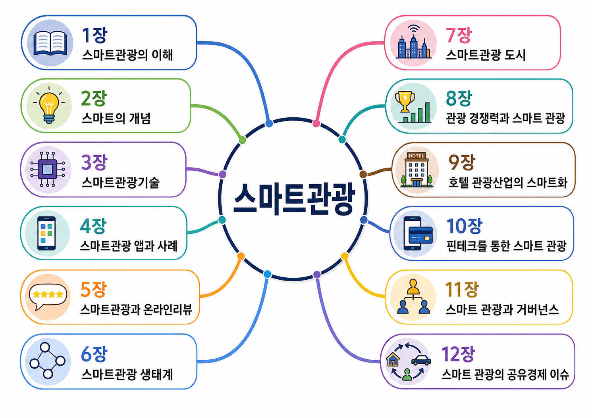
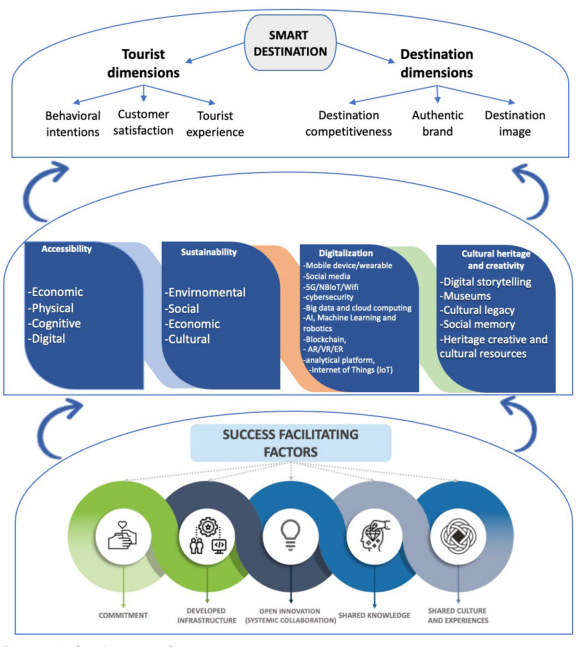

스마트 관광은 "여행에 기술을 얹는 것"이 아니라, 기술로 여행자·기업·도시가 실시간으로 연결되는 하나의 생태계를 만드는 일입니다. 핵심은 기기가 아니라 데이터의 흐름입니다. 수업 목표는 셋입니다 — ① 스마트 관광의 개념과 주요 영역으로 설명할 수 있다, ② 국내외 도시 사례를 비교 · 대조하여 벤치마킹할 수 있다, ③ 그 사례와 이론을 리포트·기획서의 근거로 쓸 수 있다. 이 페이지는 그 순서를 따라갑니다 — 국내외 사례로 현황을 이해하고, 책과 논문으로 이론적 관점을 갖습니다.
- 파트 01 · 02현장을 본다국내 사례 · 해외 사례
- 파트 03경력의 근거를 만든다제작 실습 · 공모 지원
- 파트 04 · 05개념 · 관점을 배운다책 · 이론 슬라이드
- 파트 06이론 · 깊이를 더한다연구
- 파트 07찾아본다국내 자료실
파트 01국내 사례 먼저 보기
-
먼저 보기 · 스마트관광도시 공식 플랫폼 (한국관광공사) ↗
- 무엇인가 — 이 모듈에서 배울 내용이 실제로 구현된 현장입니다. 문화체육관광부·한국관광공사가 추진하는 스마트관광도시 사업의 공식 사이트.
- 어디를 볼 수 있나 — 울산 · 인천 · 수원 · 양양 · 경주 · 대구 · 여수 · 청주 · 남원 · 통영 · 인제 · 용인 등 선정 도시를 도시별로 들어가 볼 수 있습니다.
- 이론이 어떻게 나타나나 — 이론의 네 기둥이 여기서 네 가지 서비스가 됩니다. ① 스마트 혁신 기술(AR/XR 체험·미디어아트·방탈출 게임) ② 실속 혜택(앱 할인쿠폰·스마트 줄서기·스탬프 투어) ③ 개인맞춤 콘텐츠(취향 입력 → 맞춤 코스) ④ 편의 기능(모빌리티 예약·다국어·짐 보관·오디오/VR 가이드).
- 어떻게 쓰나 — 이론을 읽기 전에 한 도시를 골라 직접 눌러보고 오십시오. 읽는 속도가 달라집니다.

이 아래는 세 단계로 이어집니다 보고 → 고르고 → 낸다
아래 두 상자는 따로 읽는 자료가 아니라 한 줄로 이어지는 순서입니다. 용인에서 도시가 무엇을 만들었는지 보고, 안동에서 내가 다룰 자리를 고르고, 그 결과를 공모전 양식에 옮겨 적으면 그대로 응모 원고가 됩니다. 학기 과제와 출품작이 같은 산출물이 되는 셈입니다 — 먼저 이 세 칸을 읽고 내려가십시오.
- 벤치마킹바로 아래 용인 여섯 자료를 플랫폼 · 연구 · 홍보 세 갈래로 갈라 봅니다. 한 도시가 무엇을 만들었고, 무엇을 근거로 삼았고, 어떻게 알렸는가 — 이 세 칸이 그대로 응모 원고의 뼈대가 됩니다.
- 안동시 지역 보기안동관광 포털과 공식블로그에서 시가 밀고 있는 것을 확인하고, 실습 페이지 ↗에서 담당 읍면동의 관광자원 세 곳을 찍습니다. 「왜 골랐는가」가 핵심입니다.
- 공모전 양식으로 결과 만들기찍은 지도와 선정 이유를 맨 아래 공모전 카드의 양식① 응모신청서에 옮겨 적고, 양식②에 서명해 PDF 두 장으로 냅니다. 개발 완성물은 필요 없습니다.
단계 1벤치마킹
스마트관광 도시 사례 — 용인 참고 웹사이트 6
열두 도시 중 한 곳만 끝까지 따라가 보면 나머지가 보입니다. 용인을 골랐습니다 — 플랫폼 · 연구 · 홍보 세 갈래가 모두 공개돼 있어 “도시가 무엇을 만들었고, 무엇을 근거로 삼았고, 어떻게 알렸는가”를 한 번에 볼 수 있는 드문 사례입니다.
① 무엇을 만들었나 · 플랫폼- 스마트관광도시 용인 ↗ 한국관광공사 공식 소개. “한 번의 터치로 연결되고, 특별한 경험으로 머무르는 당신의 스마트 용인가이드” — 사업이 스스로를 어떻게 설명하는지 보십시오.
- 용인특례시 용인관광 공식 포털 ↗ 시가 직접 운영하는 용인 스마트관광플랫폼. 위 공사 소개가 설명이라면 이쪽이 실물입니다.
- 인포그래픽 제21호 — 용인 남부권, 여행자가 선택한 미래 관광지 ↗ 용인시정연구원(YRI). 데이터를 한 장으로 요약하는 형식 자체가 리포트에 쓸 만한 본보기입니다.
- 기본연구 — 용인형 웰니스(Y-Wellness) 관광상품 및 프로그램 개발 ↗ 용인시정연구원 [YRI_2021-기본02], 원문 PDF 공개. 모듈 11 「웰니스 관광」과 바로 이어집니다 — 지자체가 웰니스를 관광상품으로 설계한 실제 보고서입니다.
- 일상에 ㅇㅇ을 더하면? 즐거움이 찾아온다! | 용인 관광홍보영상 CF편 ↗ 용인시 공식 채널 조아용TV. 모듈 06 「영상 홍보 제작 실습」의 지자체 실물 견본으로 보십시오.
- 용인특례시, ‘용인관광플랫폼’ 본격 운영… “클릭 한 번으로 여행 완성” ↗ 머니투데이 2026. 4. 24. 별도 앱 설치 없이 웹 접속만으로 쓰게 만든 점이 기사의 핵심입니다.
단계 2안동시 지역 보기
스마트관광 콘텐츠 제작 실습 — 안동시 우리가 만들 차례
용인이 남의 도시가 이미 만든 것이라면, 안동은 여러분이 만들 도시입니다. 같은 구조를 같은 방법으로, 규모만 줄여 직접 해 봅니다 — 만드는 자리는 파트 03입니다.
① 만드는 법을 읽는다 · 안내- 안동 용상동 스마트 관광지도 만들기 — ChatGPT 실습 안내 ↗ 지도는 어떻게 만들어지나 → 학생은 무엇을 하나 → 어떤 사이트를 쓰나 → 눌러보는 예시 지도 순서로 따라가는 안내서입니다. Ctrl + F가 무슨 뜻인지부터 시작하니 처음이어도 됩니다.
- 안동시 스마트 관광지도 만들기 — 실습 페이지 ↗ 읽었으면 여기서 직접 만듭니다. 지도를 눌러 좌표를 찍고 이름과 이유를 적으면 됩니다. 편집기도 코딩도 필요 없습니다.
- 안동관광 공식 포털 ↗ 안동시가 운영하는 관광 창구. 용인의 용인관광 공식 포털과 나란히 놓고 무엇을 앞세웠는지 견줘 보십시오 — 같은 자리를 두 도시가 어떻게 다르게 채웠는지가 드러납니다.
- 안동시 공식블로그 ↗ 시가 지금 무엇을 알리고 있는지가 가장 빨리 올라오는 곳. 관광자원을 고를 때 “시가 밀고 있는 것”과 “내가 찾아낸 것”을 갈라 보면 고른 이유가 선명해집니다.
단계 3공모전 양식으로 결과 만들기
- NOW OPEN 경상북도 도민체감형 AX 경진대회 ↗ 가장 먼저 마감됩니다(2026. 9. 15.(화) 18:00). 경상북도와 경북연구원이 여는 대회로, 슬로건이 "경북의 일상을 바꾸는 AI 아이디어 — 당신의 한 줄이 정책이 됩니다" 입니다. 아이디어만으로 응모할 수 있고 개발 완성물이 없어도 됩니다 — 파트 03의 제작 실습에서 만든 관광지도와 그 「왜 골랐는가」가 그대로 응모 원고가 됩니다. 공모 분야 넷 중 「교육·문화」에 문화·관광이, 「지역·공간」에 스마트 도시·교통이 들어 있어 이 모듈과 정면으로 겹칩니다. ⚠️ 학생부는 초·중·고 재학생 기준이라 대학생은 「일반부」로 응모합니다. 제출물은 응모 신청서 1부 + 개인정보·저작권 동의서 1부를 PDF로 이메일 접수(2026gyeongbuk.ax@gmail.com). 시상은 도지사상·도의장상·경북연구원장상 8팀, 총상금 700만원이고 2026년 12월 「경상북도 미래혁신포럼」에서 발표합니다. 타 공모전 입상작은 제외됩니다. 응모 전에 공고문 원문을 반드시 확인하십시오 — 신청서 서식과 심사 기준이 거기 있습니다. 공고문 원문 PDF 3쪽 ↗
파트 02해외 사례 넓게 보기
국내 현장을 봤다면 이제 유럽입니다. 한국어 요약 보고서에서 출발해 → 유럽연합의 공식 공모 → 89쪽짜리 사례집 원본으로 이어집니다. 한국의 스마트관광도시 사업과 나란히 놓고 읽어 보세요. 같은 이름 아래 유럽이 무엇을 먼저 보는지가 드러납니다.
읽기 1개념 잡기
읽기 2한국어로 먼저
-
2022년 유럽 스마트관광 수도 — 보르도(프랑스) · 발렌시아(스페인)
- 2022년 최종 후보 7개 도시 지도 · 수상 도시 보르도(프랑스) · 발렌시아(스페인) ↗ 1 보르도(프랑스, 수상) 2 발렌시아(스페인, 수상) 3 더블린(아일랜드) 4 류블랴나(슬로베니아) 5 베네치아(이탈리아) 6 팔마(스페인) 7 피렌체(이탈리아)
- 무엇인가 — 유럽연합이 해마다 뽑는 「유럽 스마트관광 수도」의 2022년 수상 도시가 프랑스 보르도와 스페인 발렌시아입니다.
보르도: 인구 약 25만 7천, 18세기 도시 경관을 간직한 채 유네스코 세계유산 등재 구역이 세계 최대 규모(등재 대상 347건)이고 도시 재생의 선두주자.
발렌시아: 인구 약 79만으로 스페인 세 번째로 큰 도시, 연 220만 명이 찾고 유네스코 세계유산 세 곳을 보유하며 관광업 종사자가 3만 명을 넘습니다. 두 도시 모두 규모가 아니라 관리 방식으로 뽑혔습니다. - 무엇을 볼 것인가 — 기술이 아니라 접근성이 첫 번째 부문이라는 점. 이론의 네 기둥(목적지·경험·비즈니스·거버넌스)을 유럽 도시에 대입해 읽기 좋은, 드문 한국어 자료입니다.
- 보고서가 뽑은 시사점 셋 — 한국관광공사 파리지사의 한국어 심화보고서는 두 수상 도시를 같은 네 축으로 뜯어보고 셋을 짚습니다 — 무장애 관광 인프라 등 전 계층을 향한 질적 접근성 강화, 전통 농업문화를 활용한 지역경제 활성화, 맞춤형 앱 서비스와 ICT 융합. 심화보고서 PDF · 한국어 8쪽 ↗ 시사점 셋 펼쳐 보기 ↗
읽기 3원본으로
-
Leading Examples of Smart Tourism Practices in Europe — 유럽 스마트관광 관행 케이스
- 무엇인가 — 위 공모에 참가한 유럽 도시들이 실제로 한 일을 네 부문으로 분류해 모은 89쪽짜리 사례집(유럽연합 집행위원회 발주, 2022년 3월). 분류 기준인 네 부문 접근성 · 지속가능성 · 디지털화 · 문화유산과 창의성이 곧 공모의 심사 부문(Accessibility · Sustainability · Digitalisation · Cultural heritage & creativity)입니다.
- 목차만 훑어도 잡힌다 — 저소득층 접근성(보르도·카를스루에), 무장애 도시 산책로(아테네·베네치아·파도바), 무장애 해변(팔마·산세바스티안·발렌시아), 관광 흐름 분산(피렌체는 기술로, 포르투는 도시계획으로), 관광세(팔마), 알리페이 도입(류블랴나)… 사례집 PDF · European Commission 2022 · 영문 89쪽 ↗
- 인터랙티브 지도 (29개 도시) ↗ — 수도 부문 44개 사례. 부문 필터와 한글·영문 검색, 도시를 누르면 원문 번호 + 한글명 + 영어 원어가 나옵니다.
- 한국어 정리본 — 전체를 4대 영역 · 16개 중분류 · 44개 세부 항목으로 갈라 놓고 항목마다 해당 도시(브뤼헤·리보르노·퀴타히아·레겐스부르크·탐페레·브라가…)를 붙였습니다. 마인드맵은 구조를 한눈에 보기 좋고 표는 항목을 찾아 쓰기 좋아 두 형식으로 만들었습니다 — 고해상도 원본은 이 두 태그로 내려받고, 화면에서 훑기만 할 때는 아래 「화면으로 보기」를 쓰십시오. 한국어 마인드맵 ⤓ 한국어 표 ⤓
마인드맵 · 표 화면으로 보기

마인드맵 — 구조를 한눈에 
표 — 항목을 찾아 쓰기 - 어디에 쓰나 — 사업계획서나 리포트에 「해외 사례」를 쓸 때 이만한 원본이 없습니다. 여행자 여정과 겹쳐 읽으면 각 사례가 여정의 어느 지점을 손보는지 보입니다. 무게가 실리는 이유는 출처에 있습니다 — 이 사례들은 도시들이 「유럽 스마트관광 수도」 공모에 제출한 신청서에서 발췌한 것이어서, 홍보물이 아니라 심사를 통과하려고 쓴 문서입니다. 부문별(접근성 · 지속가능성 · 디지털화 · 문화유산과 창의성)로 정리돼 있고, 위 태그의 EU 원본 페이지에는 2020~2026년판이 연도별로 올라와 있으니 인용할 때는 최신판을 쓰십시오.
{kind=link}
{kind=link}
읽기 4최신 회차와 또 하나의 상
-
2026년 유럽 스마트관광 수도 — 탐페레(핀란드) · 녹색 선도 도시 두브로브니크(크로아티아)
- 누가 받았나 — 스마트관광 수도 탐페레(핀란드), 녹색 선도 도시 두브로브니크(크로아티아).
- 최종 후보 15곳 지도 ↗ 2026 수상 도시 지도 · 탐페레 · 두브로브니크 ↗
수도 부문 7곳
1 브라가(포르투갈) 2 브뤼헤(벨기에) 3 브뤼셀(벨기에) 4 제노바(이탈리아) 5 라이프치히(독일) 6 레겐스부르크(독일) 7 탐페레(핀란드, 수상)
녹색 부문 8곳
1 두브로브니크(크로아티아, 수상) 2 게스트란트(독일) 3 이비자(스페인) 4 라오이스(아일랜드) 5 마리아게르피요르드(덴마크) 6 마르마리스(튀르키예) 7 리빌드(덴마크) 8 타르투(에스토니아) - 어떻게 뽑히나 — 수도 12개국 32개 신청 중 7곳, 녹색 18개국 26개 신청 중 8곳. 2025년 11월 브뤼셀에서 직접 발표해 수상이 정해집니다 — 서류로 거르고 발표로 정하는 구조가 국내 공모(파트 03)와 같습니다. 최종 후보 발표 보도자료 ↗
- 담당자들의 말로 듣기 — EU 공식 팟캐스트 약 20편. 수상 발표 편과 주제별 심화(지속가능 관광 · 스마트 모빌리티 · 문화유산 · 접근성 · 온라인 리뷰의 신뢰). 문서가 결과라면 이쪽은 그 결정의 설명 — 영어 듣기 자료로도 쓸 만합니다. 팟캐스트 ↗ European Commission · smart-tourism-capital.ec.europa.eu ↗
-
2026년 유럽 녹색 선도 도시 사례집 — Green Pioneer
- 무엇인가 — 유럽연합의 또 다른 상 「Green Pioneer of Smart Tourism」(작은 도시 대상)에 참가한 도시들의 사례집. 2024 · 2025 · 2026년판을 내려받을 수 있습니다.
- 주제가 13가지 — 자연·생물다양성 보호, 에너지·자원 관리, 기후변화 대응, 스마트 관광경영, 계절성 완화, 녹색관광·비즈니스, 지역사회 참여, 환경교육, 지속가능 도시개발, 이동수단·자전거·보행, 지역문화 홍보, 디지털화. 13개 분야 참여 도시 원형 도표 ↗
- 녹색 선도 도시 지도 (23개 도시) ↗ — 지속가능성 부문 전용. 아기아 나파 · 이비자 · 아지파얌 같은 작은 도시들이 유럽 전역에 흩어져 있습니다.
- 왜 한국에 쓸모 있나 — 계절성 완화와 지역사회 참여는 한국의 지역 관광이 똑같이 안고 있는 문제여서, 리포트의 비교 사례로 바로 쓰입니다.
- 한국어 정리본 — 2026년판을 13개 대분류 · 59개 사례로 정리(마인드맵 1장 + 표 2장). 사례마다 도시·국가 표기 — 두브로브니크 방문객 흐름 관리, 이비자 계절성 해결, 타르투 저배출 운송 등. 한국어 정리본 PPT 3장 ⤓
분야·도시별 한국어 마인드맵 · 표
파트 03직접 만들어 보기 · 공모전
스마트 관광은 만들어 본 사람과 읽기만 한 사람의 거리가 유난히 큰 분야입니다. 그래서 먼저 하나 만들어 봅니다 — 아래 스마트관광 콘텐츠 제작 실습이 그 자리입니다. 그다음이 공모전입니다. 이 모듈에서 배운 것을 그대로 출품작으로 바꿀 수 있는 자리이며, 공식 공고 주소로 바로 연결됩니다.
-
스마트관광 콘텐츠 제작 실습 — 안동시 관광지도 만들기
- 무엇을 하나 — 배경 지도를 고르고, 관광자원을 찍고, 도구의 한계를 잽니다. 편집기도 코딩도 필요 없습니다 — 지도를 클릭해 위치를 찍고 오른쪽에 이름과 고른 이유를 적으면 끝입니다. 적은 내용은 브라우저에 저장돼 창을 닫았다 열어도 남아 있고, 다 되면 「제출용 글 복사」 한 번으로 과제 형식이 만들어집니다.
- 산은 우리가 그리지 않았다 — 배경의 산 음영은 실측 고도자료를 음영 처리해 둔 것을 불러온 것입니다. 그린 것도, AI가 만든 것도 아닙니다. 주소는 이것입니다 —
server.arcgisonline.com/ArcGIS/rest/services/Elevation/World_Hillshade/MapServer/tile/{z}/{y}/{x}끝의 세 숫자가 곧 좌표여서, 안동을 보려면13/3200/7026을 넣습니다. 제공처가 밝힌 출처는 Esri · Vantor · Airbus DS · USGS · NGA · NASA · CGIAR 등이고, 같은 문서에 “global coverage down to a scale of ~1:72k”라는 확대 한계도 적혀 있습니다(아래 ③의 근거). 지형도는 OpenStreetMap 기여자 · SRTM의 자료를 OpenTopoMap(CC-BY-SA)이 그린 것입니다. World Hillshade 원본 설명 · 이용조건 ↗ OpenTopoMap 표기 규정 ↗
파트 01의 열두 도시가 한 일과 구조가 같습니다 — 인천도 수원도 지도를 만들지 않았고, 가져다 쓰고 그 위에 콘텐츠를 얹었습니다. 학생이 만드는 것은 지도가 아니라 그 위에 얹는 이야기입니다. - 한계가 스스로 말한다 — 산 음영을 켠 채 줌 15 이상으로 확대하면 경고가 뜹니다. 한국 지역은 3~4km 범위가 상한이고 그 아래로는 원본 해상도가 없어 뭉개집니다. 도구를 쓰는 법보다 도구의 한계를 아는 법이 오래 갑니다.
- 무엇으로 평가하나 — 지도가 예쁜지, 코드를 짰는지는 보지 않습니다. 관광자원 세 곳을 「왜」 골랐는가 · 출처를 밝혔는가 · "왜 더 확대하지 않았나"에 답할 수 있는가를 봅니다. 바로 아래 데이터랩 경진대회가 요구하는 것과 같습니다 — 개발 실력이 아니라 데이터를 읽고 해석한 이야기.
- 지역 고르기 — 실습 페이지 오른쪽 아래에 안동시 24개 읍면동이 있습니다. 국가데이터처 통계지리정보서비스(SGIS)의 센서스용 행정구역 경계(2025년 2분기)에 수록된 그대로여서, 각자 하나씩 맡아 나눠 갖기 좋습니다. 더 정확한 경계선이 필요하면 통계지역경계 → 센서스용 행정구역 경계 → 읍면동 순서로 내려받으면 되는데, 첫 실습에서는 권하지 않습니다 — 관광 동선은 행정경계를 넘나들어서, 경계선이 오히려 학생을 자기 동 안에 가둡니다. 리포트나 공모전처럼 근거가 필요한 산출물에서만 쓰십시오. SGIS 통계지리정보서비스 ↗
- 상업판은 이렇게 만든다 — 여러분이 만드는 것의 어른 버전입니다. ㈜노블전자지도(노블애드)가 다도라라는 플랫폼으로 지자체 전자지도를 만듭니다. 눈여겨볼 것은 같은 엔진에 콘텐츠만 갈아 끼운다는 점입니다 — 용인시판과 용인교육청판이 주소만 다르고 구조는 같습니다. 배경 지도는 Mapbox를 가져다 쓰고, 자산은 그 위에 얹은 콘텐츠입니다. 실습에서 우리가 한 것과 완전히 같은 구조이며, 규모만 다릅니다. 열어서 “이 회사가 판 것은 지도인가, 콘텐츠인가”를 물어보십시오. 용인시 전자지도 ↗ 용인교육청 전자지도 ↗ ㈜노블전자지도 노블애드 ↗
- 장소를 이름으로 찾기 — 지도를 눈으로 뒤지는 대신 “안동 하회마을”처럼 이름을 넣어 좌표를 얻는 방법이 있습니다. 이를 지오코딩이라 합니다. 실제로 넣어 본 결과입니다 — 하회마을
36.53903, 128.51809· 도산서원36.72722, 128.84353· 월영교36.57663, 128.76089. 다만 검색해서 안 나오는 곳은 아직 아무도 지도에 올리지 않은 곳입니다 — 그 빈자리를 찾아내는 것이 오히려 이 수업의 목표에 가깝습니다.지오코딩 서비스 넷 비교 — 무엇을 어떻게 확인했나
이 표는 「좋다·나쁘다」가 아니라 「확인한 것·못 한 것」으로 적었습니다. 자료를 인용할 때 지켜야 할 태도를 표 자체로 보여주기 위해서입니다 — 확인하지 않은 것은 확인하지 않았다고 씁니다.
서비스 키 한국 지명 확인 방법과 결과 Nominatim (OSM) 불필요 안동 5건 전부 정확 키 없이 직접 호출. 하회마을·시청·도산서원·월영교·안동역 모두 좌표와 도로명주소 반환. 오픈소스 osm-search/Nominatim(GPL-3.0, ★4,420)Photon (komoot) 불필요 안동 4건 전부 정확 키 없이 직접 호출. Nominatim과 같은 좌표가 나왔습니다 — 둘 다 OpenStreetMap 자료를 쓰기 때문입니다. 오픈소스 komoot/photon(Apache-2.0, ★2,990)카카오 로컬 API 필요 확인 못 함 키 없이 호출하니 HTTP 401· “cannot find Authorization : KakaoAK header”. 키가 없어 정확도는 재 보지 못했습니다VWorld 지오코더 필요 확인 못 함 키 없이 호출하니 PARAM_REQUIRED· “필수 파라미터인 key가 없어서 요청을 처리할 수 없습니다”. 국토교통부 운영. 정확도 미측정수업에는 키가 필요 없는 두 가지가 맞습니다 — 학생마다 키를 발급받게 하는 순간 실습이 무너집니다. 다만 공짜에는 규약이 붙습니다. Nominatim은 규정을 문서로 밝혀 두었습니다(원문) — “No heavy uses (an absolute maximum of 1 request per second). Provide a valid HTTP Referer or User-Agent identifying the application”, 그리고 앱이 주기적으로 보내는 요청은 대량 지오코딩으로 간주해 강하게 권장하지 않는다고 덧붙입니다. 그래서 넣는다면 글자마다 자동완성이 아니라 버튼을 눌렀을 때만 검색해야 합니다. Nominatim 사용 규약 원문 ↗
- NOW OPEN 2026 한국관광 데이터랩 활용 경진대회 ↗ 지금 접수 중입니다(마감 2026. 9. 30. 14:00). 해마다 열리므로 올해를 놓쳐도 내년 회차를 겨냥해 준비할 수 있습니다. 개발 실력을 겨루는 대회가 아니라 "관광 데이터를 활용해 문제를 해결했거나 성과를 만든 사례" 를 제출하는 대회여서, 코딩보다 데이터를 읽고 해석한 이야기가 무기가 됩니다. 시상은 문화체육관광부 장관상 · 한국관광공사 사장상, 총상금 2,000만원. 파트 01의 데이터랩이 바로 이 대회의 무대이고, 빅데이터와 여정 분석이 그대로 응모 논리가 됩니다. 상세 요건은 공고에 붙은 공모요강 첨부파일을 반드시 확인하십시오.
공모전 현황표 8건 · 그 밖의 창구 3곳
공모전 현황 한눈에
| 상태 | 공모전 | 스마트관광 연계 | 접수 | 공식 공고 |
|---|---|---|---|---|
| 접수 중 | 경상북도 도민체감형 AX 경진대회 | AI 전환(AX) 아이디어 교육·문화 분야에 문화·관광, 지역·공간 분야에 스마트 도시·교통 |
7. 15. ~ 9. 15. 18:00 | 경북연구원 공고 ↗공고문 PDF 3쪽 ↗ · 전용 홈페이지 ↗ |
| 접수 중 | 2026 한국관광 데이터랩 활용 경진대회 | 관광 빅데이터 · 정책 · 서비스 | 8. 3. ~ 9. 30. 14:00 | 한국관광 데이터랩 공고 ↗ |
| 주목 | 제주관광 데이터 활용 공모전 | 스마트관광 · 디지털 전환 아이디어 제안 · 데이터 활용 사례 2개 부문 |
2026년 공고 미확인 | 2025년 공식 공고 ↗ |
| 마감 | 2026 관광데이터 활용 공모전 ① 웹·앱 개발 | OpenAPI · 관광서비스 | 3. 30. ~ 5. 6. 16:00 | 투어라즈 공고 ↗ |
| 마감 | 2026 관광데이터 활용 공모전 ②-1 생성형 AI 프롬프톤 | 생성형 AI · TourAPI | 5. 7. ~ 5. 20. 16:00 | 투어라즈 공고 ↗ |
| 마감 | 2026 관광데이터 활용 공모전 ②-2 웹·앱 구현 | AI 아이디어 · 서비스 구현 | 7월 접수 종료 | 투어라즈 공고 ↗ |
| 마감 | 제4회 문화체육관광 AI·데이터 활용 공모전 | AI · 데이터 · 문화 · 관광 | 4. 27. ~ 6. 26. 18:00 | 공모전 공식 홈페이지 ↗ |
| 마감 | 2026 부산관광스타트업 모집 | 모집유형 5개 중 스마트관광이 첫 번째 스마트관광 · 관광데이터 · 관광인프라·공간혁신 · 체험·테마관광 · 지역특화 콘텐츠 |
3. 9. ~ 3. 25. 18:00 | 투어라즈 공고 ↗모집요강 PDF ↗ |
마감된 공고도 지워 두지 않았습니다 — 지난 회차 공고문이 다음 회차의 가장 정확한 예습이기 때문입니다. 요구 서류와 평가 기준을 미리 읽어 두면 공고가 뜬 뒤에 준비를 시작하지 않아도 됩니다. 날짜는 2026년 회차 기준이며, 회차마다 바뀌므로 반드시 공고 원문에서 확인하십시오.
눈여겨볼 세 곳 더
-
관광데이터 활용 공모전 · 투어라즈(TOURAZ) ↗
회차 설계가
OpenAPI → 생성형 AI → 웹·앱 → 관광서비스로 이어집니다. ① 웹·앱 개발은 공사 OpenAPI 활용 필수, ②-1 프롬프톤은 OpenAPI + 생성형 AI 도구 결합. 올해 접수는 끝났지만 이 구조 자체가 수업 사례입니다 — 정부가 그리는 '스마트관광 인재상'이 공모 설계에 그대로 드러납니다. - 제주관광 데이터 활용 공모전 · 제주관광 빅데이터 플랫폼 ↗ 2026년 공고 미확인 → 모니터링 대상. 2025년 회차는 두 부문이었습니다. ① 아이디어 제안 — 제주관광 정책에 활용 가능한 창의적인 아이디어: 내·외국인 관광객 유입 활성화, 지역 관광 활성화, 지속가능한 관광 활성화, 스마트 관광 서비스 및 디지털 전환, 관광약자·노약자 등 모두를 위한 제주여행 활성화 방안 등. ② 데이터 활용 사례 — 제주관광 데이터를 연구·서비스 개발·정책 수립·업무/학업에 활용해 성과를 낸 사례: 사업 기획, 수익모델 개선, 제품·서비스 구현, 신규 서비스 개발 등. ①은 아이디어만으로 낼 수 있고, ②는 이미 해 본 일이 있어야 합니다 — 학생이라면 ①, 과제나 졸업작품으로 데이터를 써 봤다면 ②입니다. 파트 06의 제주 카드·위치 데이터 논문이 다룬 그 데이터를 직접 만질 수 있는 곳이니, 공고를 기다리는 동안 데이터부터 여십시오.
- 2026 부산관광스타트업 모집 (투어라즈 공고) ↗ 모집 유형 다섯 중 「스마트관광」이 첫 번째(이하 관광데이터 · 관광인프라·공간혁신 · 체험·테마관광 · 지역특화 콘텐츠). 트랙은 초기(예비창업자 또는 부산 3년 미만) · 성장(부산 3년 이상) · 지역상생(타 지역 3년 이상 → 부산 신규 등록 예정) 셋이고, 예비창업자도 지원 가능합니다. 센터 입주 / 비상주 선택, 접수는 투어라즈(KoDATA 기업정보 등록 선행, 예비 제외). 부산 사례와 이어지는 창업 입구.
- European Capital / Green Pioneer of Smart Tourism (해외 · 도시 단위) ↗ 파트 02의 수상 도시와 사례집이 나오는 공모 자체. 도시가 신청하므로 학생이 직접 낼 수는 없지만, 신청 서류가 무엇을 묻는지 보는 것만으로 공부가 됩니다 — "내 도시가 낸다면 네 부문에 무엇을 쓸까" 가 그대로 과제입니다.
관광 창업 쪽 공모(예비관광벤처 · 지역 관광 스타트업 · 정부 R&D · 로컬크리에이터 등)는 03 · 관광벤처창업론 모듈에 층위별로 정리돼 있습니다.
파트 04책
이 그림의 12개 장 · 강의 슬라이드 내려받기 ↗ — 아래 마인드맵과 같은 순서로 짜인 12개 장의 강의 슬라이드 견본(PDF). 경희대학교 스마트관광연구소

- 「스마트관광」 제2판 — 구철모 · 정남호 지음 · 백산출판사 ↗ 경희대 스마트관광연구소가 여러 해에 걸쳐 쌓은 연구를 집대성한 교재이며, 지금은 제2판(2021. 3. 10.)입니다. 소비자 측면의 효율성·편의성에서 출발해 호텔·관광지·교통·음식 산업이 함께 만드는 스마트 관광 생태계까지 다룹니다. 1장이 스마트 도시 · 스마트 관광 · 스마트 관광 도시의 개념을 갈라 놓습니다.
- 「스마트 관광 도시」 — 경희대학교 출판문화원 ↗ 앞의 책이 스마트 관광 전반이라면, 이쪽은 '도시'에 초점을 맞춘 책입니다. 부산·울산·인천 등 국내 스마트관광도시 사업, 그리고 「자료 · 해외」의 유럽 사례를 같은 틀로 견주어 읽을 때 기준이 되어 줍니다.
-
NEW 2025 「스마트관광 대전환 — K-관광대국을 상상하다」 · 정남호 지음 ↗
세 권 중 가장 최근에 나온 책(2025. 12. 25.)이고, 앞의 두 권과 결정적으로 다른 지점이 있습니다 — AI 퍼스트 시대를 전제로 쓰였다는 것입니다. 저자는 기술 자체가 아니라 “기술을 넘어 사람을 향한 경험으로”를 내걸고, 빅데이터·인공지능이 관광산업을 바꾸는 국면에서 K-관광대국 전략을 제시합니다. 15개 Part 276쪽 — 관광 패러다임 대전환 · 스마트관광플랫폼 · 스마트관광도시 · 성숙도 모델 · 스마트모빌리티 · 경제적 파급력 · 스마트호텔 · 스마트MICE · 지속가능발전목표 · 스마트공연예술 · 스마트레스토랑 · 스마트관광의 미래.
이 모듈과 겹치는 곳 — Part 3 스마트관광도시가 파트 01의 국내 열두 도시와, Part 9 지속가능발전목표가 파트 02의 EU 네 부문과 바로 이어집니다. 저자 정남호는 「스마트관광」 제2판의 공저자이기도 해서, 같은 연구실이 4년 사이 무엇을 바꿔 말하는지를 두 책을 나란히 놓고 볼 수 있습니다 — 리포트의 「최신 동향」 문단을 쓸 때 이만한 근거가 드뭅니다.
파트 05이론 슬라이드
좌우로 넘기며 다섯 장을 훑거나, 오른쪽 「전체 펼쳐 보기」로 한 번에 읽으십시오.
파트 06연구
국제 연구 (SSCI)

맨 위 두 편(2024 종합 · 2015 정의)을 먼저 보고, 나머지 아홉 편으로 그 사이에 무엇이 연구됐는지를 훑으십시오. 흐름이 뚜렷합니다 — 기술의 효과 측정(2020) → 개념 비판과 정리(2020~2021) → 주민·프라이버시 같은 그늘(2021~2022) → 종합과 메타분석(2023~2024).
| 연구 | 핵심 내용 | 수업·연구 활용 |
|---|---|---|
| Gursoy, Luongo, Della Corte & Sepe (2024)스마트 관광목적지 — 최근 연구 동향 개관과 앞으로의 연구 과제Journal of Hospitality and Tourism Technology 15(3), 479–495 · 원문 PDF 17쪽 내려받기 ⤓ | 409편을 문헌계량으로 분석해 최근 흐름을 접근성 · 지속가능성 · 디지털화 · 경험 공동창출 · 창의성 중심으로 정리. | 여기서부터 읽으십시오 — 2020년대 연구 흐름을 한 편으로 설명하기 가장 좋고, 전문이 무료입니다공급자 · 수요자 |
나머지 10편 — 2015 정의부터 2023 메타분석까지
| 연구 | 핵심 내용 | 수업·연구 활용 |
|---|---|---|
| Gretzel, Sigala, Xiang & Koo (2015) — Smart tourism: foundations and developments스마트 관광 — 토대와 전개Electronic Markets 25, 179–188 · DOI 10.1007/s12525-015-0196-8 | 스마트 관광을 학술적으로 정의한 출발점. "관광 목적지와 산업, 관광객이 ICT에 점점 더 기대게 되면서 막대한 데이터가 가치 제안으로 바뀌는 현상" 이라고 규정하고, 기술적·비즈니스적 토대와 함께 한계와 부작용까지 짚음. | 정의를 인용할 때는 이 논문 — 공저자 Chulmo Koo(구철모)가 파트 04 「책」의 저자여서, 그림·슬라이드·책·논문이 한 갈래로 이어짐공급자 · 수요자 |
| Jeong & Shin (2020) — Tourists’ Experiences with Smart Tourism Technology at Smart Destinations and Their Behavior Intentions스마트 목적지에서 관광객이 겪는 스마트관광기술 경험과 행동 의도Journal of Travel Research | 스마트관광기술(STT)의 정보성 · 상호작용성 · 개인화가 관광 경험과 만족, 재방문 의도에 미치는 영향을 검증. 보안·프라이버시도 함께 다룸. | 스마트관광기술의 측정 변수를 소개하기에 가장 좋음수요자 |
| Sustacha, Baños-Pino & Del Valle (2023) — The role of technology in enhancing the tourism experience in smart destinations: A meta-analysis스마트 목적지에서 기술이 관광 경험을 끌어올리는 역할 — 메타분석Journal of Destination Marketing & Management 30, 100817 | 여러 실증연구를 메타분석. 스마트기술과 관광경험의 관계를 종합하고 정보성 · 상호작용성의 중요성을 재확인. | Jeong & Shin(2020) 이후의 연구 축적을 보여주기 좋음수요자 |
| Balakrishnan, Dwivedi, Malik & Baabdullah (2023) — Role of smart tourism technology in heritage tourism developmentJournal of Sustainable Tourism 31(11), 2506–2525 | 스마트관광기술을 문화유산 관광의 경험·이미지·재방문 의도와 연결. | 문화관광 콘텐츠 · AR/VR 사례와 연결수요자 |
| Azis, Amin, Chan & Aprilia (2020) — How smart tourism technologies affect tourist destination loyaltyJournal of Hospitality and Tourism Technology | STT → 기억에 남는 관광경험 → 만족 → 목적지 충성도 의 관계를 실증 분석. |
학생에게 연구모형을 보여주기에 매우 좋음수요자 |
| Baggio, Micera & Del Chiappa (2020) — Smart tourism destinations: a critical reflection스마트 관광목적지에 대한 비판적 성찰Journal of Hospitality and Tourism Technology | 기술을 많이 쓰는 도시가 곧 스마트 관광목적지인가를 비판적으로 검토. 기술보다 조직 · 프로세스 · 목적지 관리가 중요하다고 봄. | Smart Destination 개념 설명공급자 |
| Bastidas-Manzano, Sánchez-Fernández & Casado-Aranda (2021) — The Past, Present, and Future of Smart Tourism Destinations: A Bibliometric AnalysisJournal of Hospitality & Tourism Research | 스마트관광 목적지 연구의 지식 구조와 연구 흐름을 문헌계량으로 분석. | 스마트관광 연구동향 소개공급자 |
| Gretzel & Koo (2021) — Smart tourism cities: a duality of place where technology supports the convergence of touristic and residential experiences스마트 관광 도시 — 기술이 관광객과 거주민의 경험을 겹쳐 놓는 이중의 장소Asia Pacific Journal of Tourism Research 26(4), 352–364 | 관광객만을 위한 스마트관광이 아니라 관광객과 주민의 경험이 겹치는 스마트 관광 도시를 제안. 오버투어리즘과 거주민 문제를 포함. | 스마트시티와 스마트관광의 관계공급자 · 주민 |
| Shafiee 외 (2021) — Smart tourism destinations: a systematic reviewTourism Review 76(3), 505–528 | 스마트관광 목적지의 구성요소 · 측정 · 성과를 체계적으로 검토. | 스마트관광 개념 정리용공급자 |
| Gong & Schroeder (2022) — A systematic literature review of data privacy and security research on smart tourism스마트관광의 데이터 프라이버시·보안 연구에 대한 체계적 문헌고찰Tourism Management Perspectives 44, 101019 | 스마트관광에서의 개인정보 · 데이터 보안 · 신뢰 문제를 체계적으로 정리. | AI·빅데이터 수업의 스마트관광의 어두운 면공급자 · 수요자 |
각 행 끝의 공급자수요자 표시는 그 논문이 누구의 관점에서 쓰였는지입니다 — 공급자는 도시·목적지·기업이 관광을 관리·설계하는 쪽, 수요자는 관광객이 겪고 반응하는 쪽. 리포트에서 어느 편의 이야기를 하고 있는지 헷갈릴 때 이 표시로 짝을 맞추십시오.
한국어 제목이 붙은 여섯 편이 이 수업에서 먼저 볼 논문입니다(학술적 우열이 아니라 수업 기준의 순서). 표는 좌우로 밀어서 볼 수 있습니다. 대부분 초록은 무료이고 원문은 기관 구독이 필요하지만, 맨 위 Gursoy 외(2024)는 원문 PDF 전체(17쪽)가 무료이고 이 사이트에서 바로 열립니다 — 한 편만 읽어야 한다면 이것부터.
국내 연구 (KCI)
같은 주제를 한국의 맥락에서 다룬 논문들입니다. 국내 리포트라면 위 국제 논문으로 개념을 잡고, 아래로 현장을 채우는 조합이 좋습니다.
| 연구 | 핵심 내용 | 수업·연구 활용 |
|---|---|---|
| 국내 스마트관광에 관한 연구동향 분석: KCI 등재지 학술논문을 중심으로인문사회 21 · 아시아문화학술원 · DBpia | 국내에서 스마트관광을 다룬 등재지 논문들을 모아 무엇이 얼마나 연구됐는지를 정리한 연구동향 분석. | 개별 논문보다 먼저 볼 글 — 리포트의 선행연구 검토 문단의 뼈대 |
| 빅 데이터를 활용한 스마트 관광 도시 사례 분석 연구: 제주특별자치도 관광객 데이터를 중심으로KCI 등재 · 제주 관광객 데이터 실증 | 제주를 찾은 관광객의 카드 사용 데이터와 위치기반 데이터로 관광 흐름을 읽어 낸 실증 연구. | 「빅데이터」가 어떤 데이터·방법이 되는지 — 다음 모듈 「빅데이터 분석」 예습 |
| 스마트시티 관점에서 본 국내 스마트관광의 전환 — 스마트관광 도시 성공 사례 분석과 지속 가능성의 탐구KCI 등재 · 국내 사례 분석 | 스마트관광을 스마트시티의 한 갈래로 놓고 국내 사례를 분석. | 스마트 목적지 층이 실제 도시 정책에서 다뤄지는 방식 |
| 스마트관광도시 발전을 위한 공법적 과제KCI 등재 · 공법 · 데이터 규제 | 기술이 아니라 법과 제도에서 본 스마트관광. 데이터의 활용과 보호, 공공데이터 개방, 교통·숙박 공유서비스 규제. | 스마트 거버넌스 층에 정확히 대응 — 아이디어가 법에 먼저 걸리는 이유 |
네 편이 연구동향 → 도시 정책 → 데이터 실증 → 법·제도 순으로 놓여 있습니다. 위에서 아래로 읽으면 무엇이 연구됐나 → 어떻게 적용되나 → 무엇으로 증명하나 → 무엇이 가로막나 가 됩니다. KCI·DBpia는 초록까지 무료이고 원문은 소속 기관 로그인이 필요할 수 있습니다.
파트 07국내 자료실
파트 01의 공식 플랫폼이 국내의 현장이라면, 여기는 한국에서 만들어진 문서입니다 — 곁에 두고 볼 보고서와 게시판.
- 한국관광 데이터랩 — 해외지사 조사보고서가 쌓이는 게시판 ↗ 파트 01 유럽 심화보고서의 원문 게시글이자, 한국관광공사 해외지사의 현지 조사 자료가 쌓이는 게시판. 국가별 시장 동향·관광 트렌드 보고서가 계속 올라오고 대부분 한국어 PDF입니다 — 해외 사례를 인용할 때 영어 원문보다 여기를 먼저.
- 국제관광동향 2022년 제5호 — 세계 관광 회복 · 프랑스 관광계획 · 국제기구 소식 (PDF) ↗ 한국문화관광연구원(KCTI) 관광정책연구실이 펴내는 정기 동향 보고서. 구성은 셋 — ① 세계 관광 동향(회복 현황, 주요국 입국·출국) ② 주요국 관광 동향: 프랑스 「데스티나시옹 프랑스(Destination France)」 관광계획 ③ 국제기구 소식과 주요 발행 보고서. 위 유럽 자료와 이어지는 지점이 ②입니다 — 보르도가 속한 프랑스가 국가 차원에서 관광을 어떻게 다시 설계하는지 볼 수 있습니다. ①은 UNWTO의 항공 예약·여행감정(travel sentiment) 지표를 그대로 인용하는데, 웹·소셜 대화를 긍정/부정으로 합산한 이 지표야말로 다음 모듈 「빅데이터 분석」이 다루는 관광 데이터의 실물입니다. 리포트에 통계를 인용할 때 표기 형식을 배우기에도 좋은 자료입니다.
- 생성형 AI로 보는 관광 의사결정 — 전략 편 ↗ 생성형 AI(GenAI)가 관광 계획·마케팅·운영의 의사결정을 어떻게 바꾸는지 정리한 인터랙티브 자료. '전략(Strategy)' 섹션에서는 데이터·AI를 실제 관광 비즈니스 판단에 접목하는 방향을 살펴봅니다.